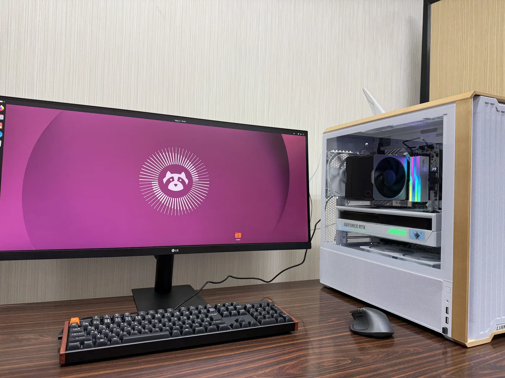

找到问题
结合学科兴趣与学习基础，认识领域中的研究问题。
QUESTIONA NEW WAY TO EXPLORE
人工智能既能帮助理解生命、探索分子，也能用于分析经济社会数据、理解经营议题、讨论技术公平性与研究伦理。我们从具体学科的问题出发，将证据分析、计算实践与表达能力连接起来。
01 / RESEARCH DIRECTIONS
浏览课题的研究领域与概要，找到与你的兴趣和学科背景相连的方向。
研究方向涵盖生命科学、化学、智能计算、人文社会与经济经营。完整目录暂未加载时，可通过下方邮箱咨询。
咨询我们课题以领域概览呈现，具体安排结合学习基础与兴趣沟通。
02 / THE RESEARCH JOURNEY
从建立问题意识，到有条理地解释自己的发现，逐步熟悉科研的思考方式。
结合学科兴趣与学习基础，认识领域中的研究问题。
QUESTION学习文献阅读与数据思维，理解工具与研究目标的关系。
UNDERSTAND在实践中观察、比较与讨论，学习用证据检验自己的想法。
EXPLORE梳理研究过程，清晰说明发现、局限与下一步的问题。
COMMUNICATE03 / RESEARCH IN PRACTICE
从计算环境到实验操作，记录学习与探索中的具体时刻。

GPU / COMPUTING
统一的 GPU 计算环境，支持相关课题的数据处理、模型训练与结果分析。把更多精力放在问题、方法与验证上。
照片记录实际学习与研修经历，具体实践内容结合课题与学习安排确定。
04 / PROGRAM OPTIONS
四档项目对应不同的学习起点与研究目标。结合已有基础、可投入时间和希望形成的成果，选择适合自己的路径。
FOUNDATIONS
建立 AI 基础，迈出实践的第一步。
9 次课 × 每次 3 小时 · 日语小组授课
从零开始，或希望先建立 AI 经历与方向认知的学生。
学习记录与过程证明，以及 1 页项目概要。
RESEARCH PROJECT
在导师指导下，完成一个研究项目。
包含基础档的内容与成果
希望形成完整成果包，并能清楚说明研究过程与结果的学生。
正式报告、核心图表、展示材料、代码／环境／实验日志，以及研究表达与问答记录。
REVIEW & REFINE
在评审与反馈中，打磨研究成果。
包含成果档的内容与成果
希望进一步检验研究思路，并提前熟悉学术汇报与追问的学生。
成果档全部成果，加上评审意见要点、修改记录与迭代后的最终成果包。
TAILORED PATH
围绕明确目标，设计个性化研究路线。
包含专业档，按目标组合可选模块
已有目标研究室、深入研究或成果转化方向，希望获得定制支持的学生。
个性化路线与里程碑，以及按选定模块形成的研究计划、验证记录或可演示原型等。
具体选题、实践与评审结合基础和目标安排；教授／专家参与时间依排期确定，定制模块按需选择。
咨询适合的项目05 / RESEARCH TO APPLICATIONS
从真实参与出发，说明你发现了什么、做过什么，以及希望继续探索什么。
把自己真正参与的 AI 科研经历，转化为有事实支撑的申请表达。
依照学校格式，说明兴趣如何形成、经历带来的认识，以及与志望专业的联系。
先回应考试题目，再选择相关经历或思考作为论据；不把科研故事硬套进所有题目。
讲清研究问题、本人贡献、支持结论的证据与反思，展示科研思维和学习经验。
科研经历用于支持申请和展示成长，不能替代学校要求，也不保证录取。
将研究经历整理为清晰的问题意识与研究计划，帮助导师理解你的准备和兴趣。
结合已有阅读与实践，说明研究问题、拟探索的方向及与目标研究室的契合度。
先核对是否允许提前联系、发送计划书或附件；仅在允许时提供可公开的数据或结果摘要，并说明本人贡献及局限。
用具体经历支撑讨论，回应导师的问题；按选考规则沟通接收意向或争取内诺。
并非所有导师都要求已有科研经历。是否需要事前联系、内诺或同意书依具体选考规定，内诺不等于最终录取。
06 / OFFICIAL ADMISSIONS
按学部与大学院查看相关选考要求，理解科研经历与申请材料的具体关系。
具体要求因学校、项目和选考方式而异。暂未载入核对记录时，可先查看下方申请指导，并以学校当年度募集要项为准。
查看科研经历的申请用途以下摘要仅适用于标注的项目、年度与选考方式；提交材料前，请打开官方来源确认。